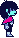
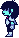
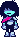
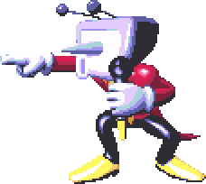
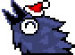
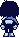
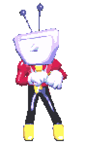

kendi düşündüğüm bir oyun ve tanıtım web sitesi

DELTATALE


Bölüm 01
Deltatale dünyasına hoş geldin.
Undertale ve Deltarune ruhundan esinlenen bu web sitede karakterlere, kısa bir sahneye ve bir savaş örneğine göz atacağız. Ayrıca benim adım Tenna.

Bölüm 02
Şimdi biraz aksiyon zamanı.
Tenna'nın tanıtımından sonra bir savaş örneği geliyor. Video kendi kontrolleriyle çalışır; duraklatabilir, ileri sarabilir veya tekrar izleyebilirsin.

Savaş örneği
Kaizo Knight
Gösteri başlasın.
< controls playsinline preload="metadata" aria-label="Kaizo Knight savaş videosu">
Video otomatik başlamaz. Oynatmak için kontrole dokun.
Devam et ↓Beklenmedik misafir
Tenna'nın sunumunda bir aksilik var...


Kısa bir mola
Kris de burada.
Kris pek konuşmuyor. Ben anlatırken etrafta dolaşmaya karar verdi. Sürpriz: bir sunumda bile kimse yerinde durmuyor.

Sunumun sonu
İzlediğin için teşekkürler!
Bye Bye!
